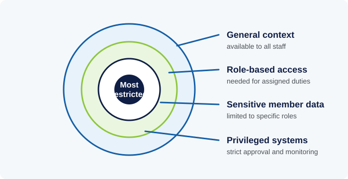

Tier 3
An institution holding decades of personal and financial data for millions of members carries a correspondingly serious data protection responsibility - one grounded in Uganda's own legal framework as well as everyday operational practice.
1. Why Data Protection Matters
Uganda's Data Protection and Privacy Act, 2019, establishes legal obligations for organizations that collect and process personal data, including principles such as collecting data only for specified, lawful purposes, keeping it accurate and secure, and not retaining it longer than necessary. An institution holding member records - including sensitive personal data such as identification details, employment history, and financial contributions - sits squarely within the scope of these obligations.
'Sensitive personal data' typically receives additional protection under data protection law because its exposure carries a higher risk of harm to the individual - financial account details and health-related information (relevant, for instance, to invalidity benefit assessments) are common categories treated with heightened care.
Data protection is not solely a legal or IT department concern. Anyone who accesses, handles, or discusses member information in the course of their work is a practical participant in an institution's data protection obligations, whether or not their job title mentions data or security explicitly.
2. Watch: Where Is Cybercrime Really Coming From?
Security expert Caleb Barlow explains how organized, everyday cybercrime actually operates, and why routine information-sharing and basic hygiene matter more than most people assume.
3. Everyday Information Security Practices
Password hygiene - using strong, unique passwords for different systems and not sharing credentials, even with trusted colleagues - remains one of the most basic and most frequently neglected information security practices, precisely because password-related failures feel too mundane to seem like a real risk until they cause an actual breach.
Phishing - fraudulent messages designed to trick a recipient into revealing credentials, transferring funds, or installing malicious software, often by impersonating a trusted source such as a colleague, bank, or well-known service - remains one of the most common entry points for security incidents at organizations of all sizes, because it targets human judgment rather than technical vulnerabilities, and it continues to evolve in sophistication.
The 'need-to-know' principle - limiting access to sensitive information to only those who require it for their specific role - reduces the potential impact of any single compromised account or insider mistake, since broad, unrestricted access to sensitive data multiplies the potential damage from any one point of failure.

4. Responding to Incidents and Staying Compliant
Prompt internal reporting of a suspected data incident - even one that seems minor or uncertain - is critical, because early reporting narrows the window in which harm can occur and gives the institution the best chance of containing and correcting a problem before it affects a large number of members. Delayed reporting, by contrast, often turns a manageable incident into a significantly larger one.
Data minimization - collecting and retaining only the personal data actually needed for a defined purpose, rather than accumulating data 'just in case' it might be useful later - is both a legal principle under data protection law and a practical risk-reduction measure, since data that was never collected or was properly deleted cannot subsequently be breached.
Staying compliant with data protection obligations, similar to the broader regulatory compliance principle covered in its own category, requires an ongoing process rather than a one-time setup: regularly reviewing what data is held and why, keeping security practices current as threats evolve, and ensuring that all staff - not only technical specialists - understand their part in protecting the member information the institution is trusted with.
5. A Cautionary Case: The Equifax Data Breach
In 2017, credit reporting agency Equifax disclosed a breach exposing sensitive personal data for roughly 148 million people. The technical cause was almost mundane: a known software vulnerability that a patch already existed for, which Equifax's own security team had been alerted to but failed to apply consistently across its systems. Attackers exploited the unpatched system, and an additional lapse - an expired security certificate - meant the company's own monitoring tools failed to detect the intrusion for over two months.
The case is a direct illustration of Sections 2 and 3 of this lesson: the failure was not a sophisticated, unstoppable attack, but a routine patching and monitoring discipline that broke down, followed by a slow public disclosure that compounded reputational damage once the breach became known. It is a useful reminder that information security is less often defeated by exotic threats than by the basic, unglamorous hygiene - patching, access control, prompt reporting - this lesson describes.
References & Further Learning
Independent sources for readers who want to go deeper than this lesson, cited so you can verify the material yourself.
-
Website
NITA-U - Data Protection & Privacy Notice
Uganda's National Information Technology Authority, which oversees data protection compliance under the Data Protection and Privacy Act, 2019.
-
Read
NITA-U - Data Protection and Privacy Act No. 9 of 2019
The Ugandan law underlying the compliance obligations discussed in Section 4.
-
Case
U.S. Government Accountability Office - "Data Protection: Actions Taken by Equifax and Federal Agencies in Response to the 2017 Breach"
The official government review of the breach discussed above.
Knowledge Check: Data Protection & Information Security
Finish the reading above, then take the test to check your understanding.
Question 1 of